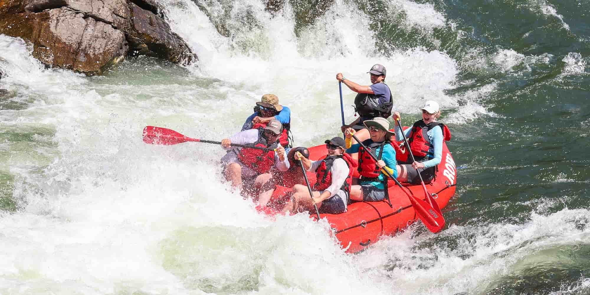

Here at the Crossed Oars Rafting, our whitewater rafting trips are designed to provide thrill-seekers with an unforgettable experience on the water. Our expert guides ensure safety while you navigate through stunning landscapes and challenging rapids. Oars Up!

About Us - Crossed Oars Rafting
History
Crossed Oars Rafting was founded in 1995 by a group of adventure enthusiasts who wanted to share their love for the great outdoors. Starting with just a handful of rafts and a passion for exploration, the company has grown into a leading provider of whitewater rafting experiences.